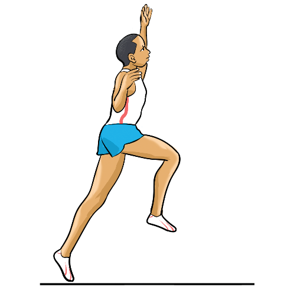

(i)
Drive forcefully through the ankle, knee, and hip to propel upwards and forward;
(ii)
Make sure the take-off foot strikes the take-off board on the midline during take-off, Figure 2.19;
(iii)
Ensure the heel of the take-off foot strikes first to allow a rolling action onto the ball and then the toes of the foot to give maximum vertical lift;
(iv)
Strongly push the take-off foot using your toes; and
(v)
Increase the vertical acceleration by arms and the non-take-off leg.

Flight
The flight occurs after the take-off. It is a body transfer from the take-off point to the landing point maintaining balance, maximising distance, and preparing for a smooth landing. Since the athlete cannot generate additional momentum in the air, the goal is to control body posture and minimise forward rotation to achieve an optimal landing position. The following steps will help you execute a flight:
(i)
Raise the non-take-off leg to a horizontal position during take-off;
(ii)
Keep hands above shoulder level, Figure 2.20;
(iii)
Keep your trunk in an upright position to facilitate the up movement of your leg during landing; and
(iv)
Maintain the perfect alignment between your head, back and hips.
SPORTS STUDIES FORM TWO.indd 51
9/17/25 9:54 AM